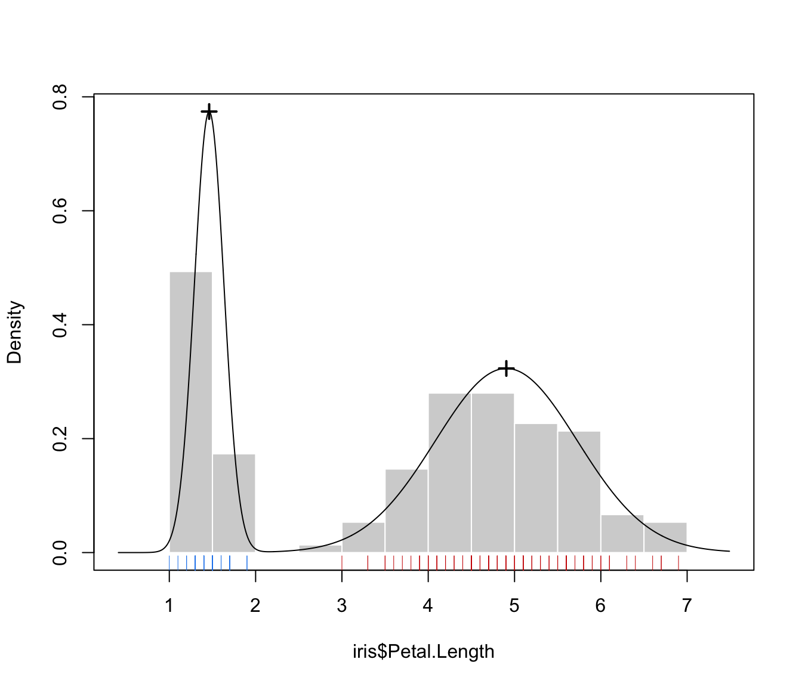
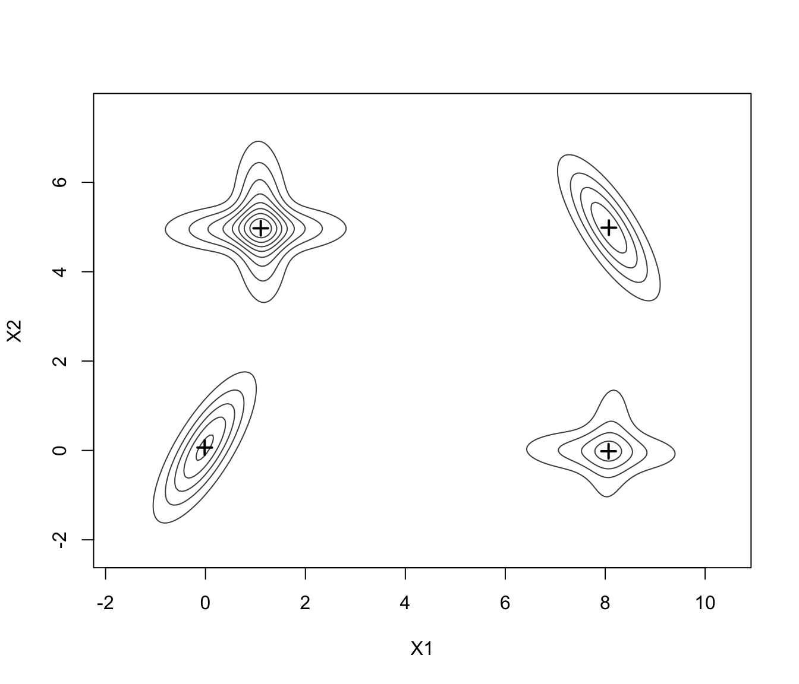
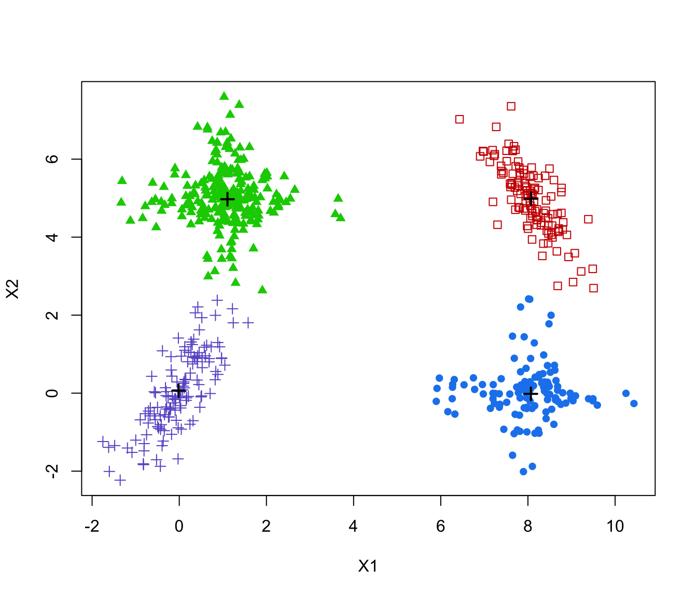
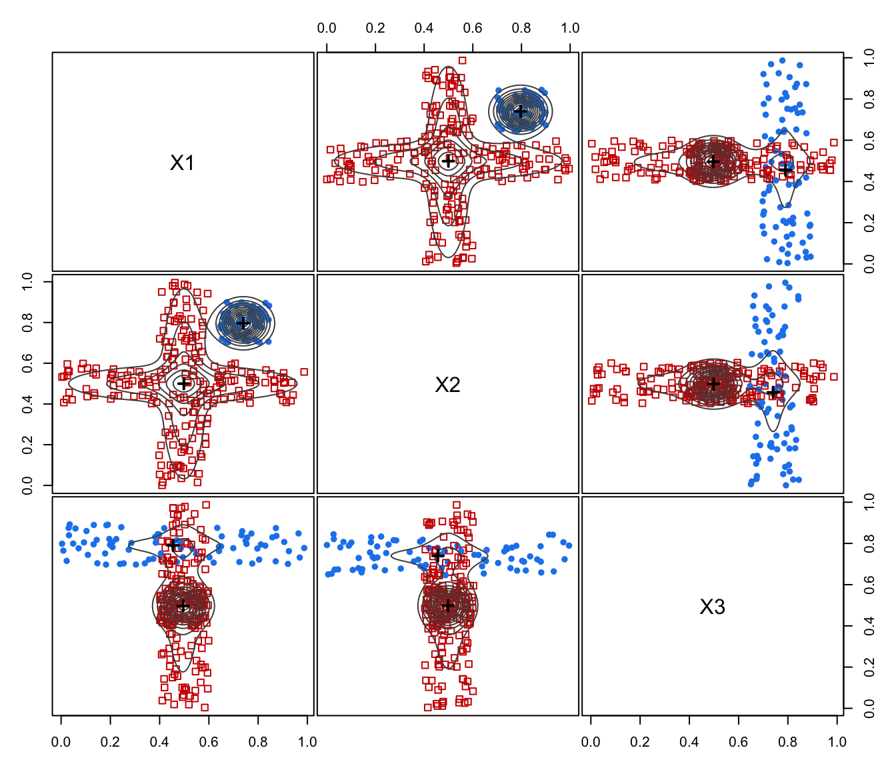
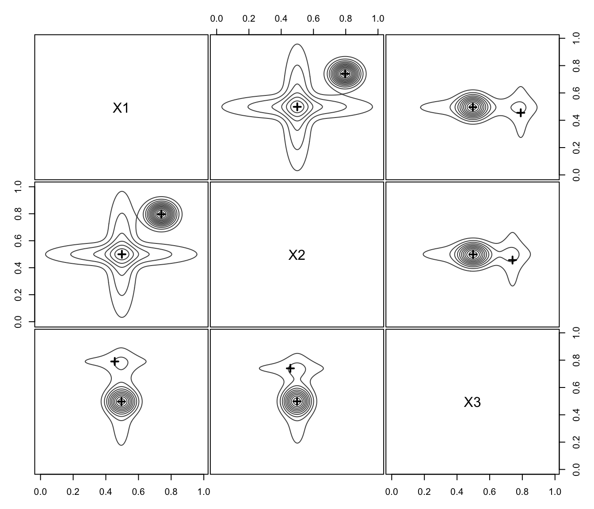

Plotting method for modal-clustering based on Gaussian Mixtures
plot.MclustMEM.RdPlots for MclustMEM objects.
Usage
# S3 method for class 'MclustMEM'
plot(
x,
dimens = NULL,
addDensity = TRUE,
addPoints = TRUE,
symbols = NULL,
colors = NULL,
cex = NULL,
labels = NULL,
cex.labels = NULL,
gap = 0.2,
...
)Arguments
- x
An object of class
'densityMclustBounded'obtained from a call todensityMclustBounded().- dimens
A vector of integers specifying the dimensions of the coordinate projections.
- addDensity
A logical indicating whether or not to add density estimates to the plot.
- addPoints
A logical indicating whether or not to add data points to the plot.
- symbols
Either an integer or character vector assigning a plotting symbol to each unique class in
classification. Elements insymbolscorrespond to classes in order of appearance in the sequence of observations (the order used by the functionunique). The default is given bymclust.options("classPlotSymbols").- colors
Either an integer or character vector assigning a color to each unique class in
classification. Elements incolorscorrespond to classes in order of appearance in the sequence of observations (the order used by the functionunique). The default is given bymclust.options("classPlotColors").- cex
A vector of numerical values specifying the size of the plotting symbol for each unique class in
classification. By defaultcex = 1for all classes is used.- labels
A vector of character strings for labelling the variables. The default is to use the column dimension names of
data.- cex.labels
A numerical value specifying the size of the text labels.
- gap
A numerical argument specifying the distance between subplots (see
pairs()).- ...
Further arguments passed to or from other methods.
References
Scrucca L. (2021) A fast and efficient Modal EM algorithm for Gaussian mixtures. Statistical Analysis and Data Mining, 14:4, 305–314. doi: 10.1002/sam.11527
Examples
# \donttest{
# 1-d example
GMM <- Mclust(iris$Petal.Length)
MEM <- MclustMEM(GMM)
plot(MEM)

# 2-d example
data(Baudry_etal_2010_JCGS_examples)
GMM <- Mclust(ex4.1)
MEM <- MclustMEM(GMM)
plot(MEM)
 plot(MEM, addPoints = FALSE)
plot(MEM, addPoints = FALSE)

plot(MEM, addDensity = FALSE)

# 3-d example
GMM <- Mclust(ex4.4.2)
MEM <- MclustMEM(GMM)
plot(MEM)

plot(MEM, addPoints = FALSE)

plot(MEM, addDensity = FALSE)
 # }
# }